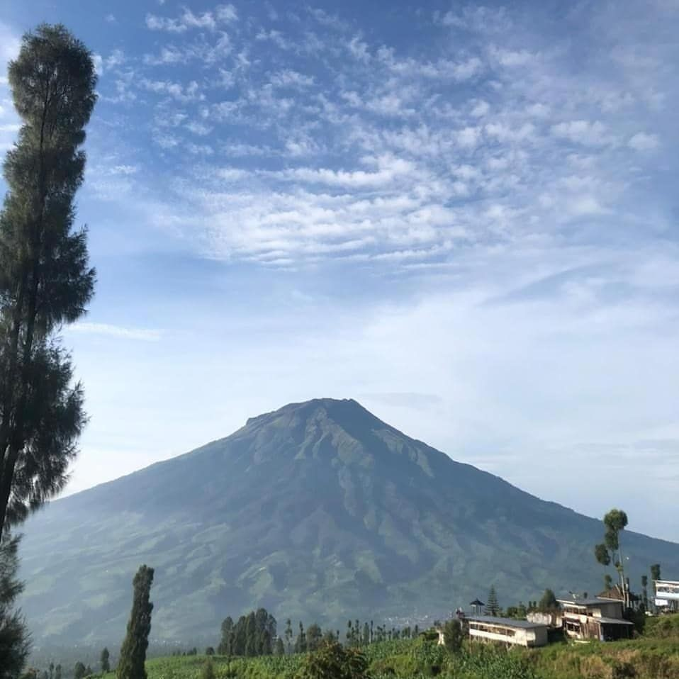
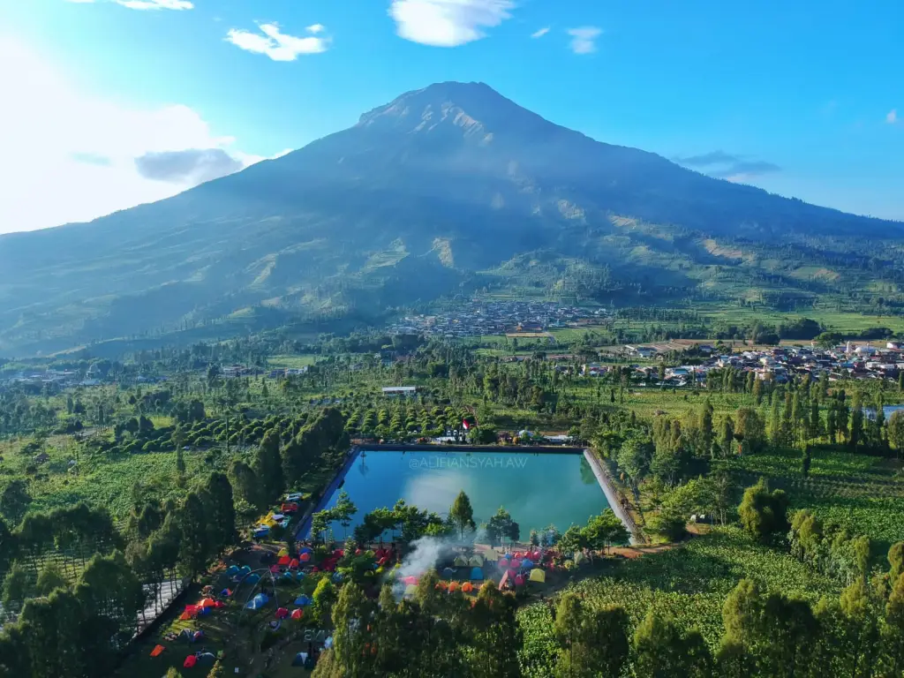

Wisata Alam Posong
Wisata Alam Posong merupakan salah satu pilihan wisata di Temanggung, Jawa Tengah. Lokasinya yang berada di dataran tinggi membuat panorama Posong sangat indah. Di Posong, kamu bisa melihat pemandangan Gunung Sindoro dan Sumbing, apalai kalau cuaca sedang cerah. Nah, buat kamu yang berencana liburan ke sini, simak dulu informasi Wisata Alam Posong berikut sebagai panduanmu!
Wisata Embung Kledung
Embung Kledung merupakan sebuah tempat untuk kamu mengajak anak-anak berkemping ria diantara panorama Gunung Sindoro dan Gunung Sumbing.